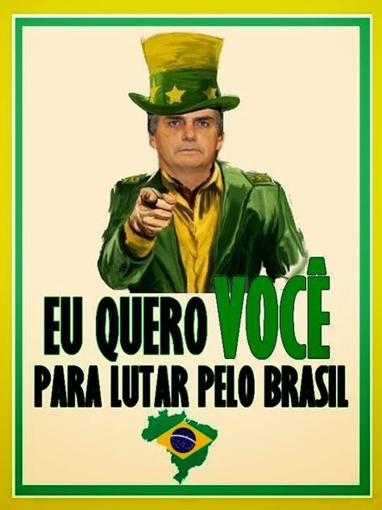

ARCHIVE ITEM · MEME_BR2018_001
EU QUERO VOCÊ PARA LUTAR PELO BRASIL
The archive describes a campaign-style poster adapting the Uncle Sam recruitment motif and records WhatsApp / social media as its platform context.
BRAZIL · 2018
How a familiar recruitment-poster template was adapted to address viewers directly and frame political participation as patriotic duty.
← Back to BrazilThis image adapts the famous Uncle Sam recruitment poster, in which a stern figure points at the viewer and says “I want you.” The Brazilian version reads “EU QUERO VOCÊ PARA LUTAR PELO BRASIL,” meaning “I want you to fight for Brazil.” It uses a familiar image to make the viewer feel personally called to act.
During Brazil’s 2018 election, Bolsonaro’s campaign and supporter networks often used patriotic language and messages about law, order, and political change. By borrowing a US recruitment image, the meme gives a political message the look of a call to national service.
WhatsApp was an important channel for political messages in Brazil. Images could move through personal contacts and group chats, alongside other social-media posts. The archived poster is recorded in a WhatsApp/social-media context, though the image itself does not tell us how many people received or forwarded it.
The images below show examples connected to this topic, with links to their recorded sources and additional item details.

ARCHIVE ITEM · MEME_BR2018_001
The archive describes a campaign-style poster adapting the Uncle Sam recruitment motif and records WhatsApp / social media as its platform context.